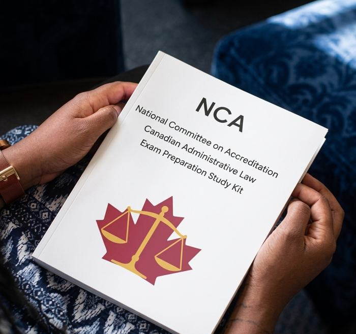

Университеты по странам, маршруты LLB, JD, LL.M. и MA, требования к поступающим, экзамены, стипендии, стажировки, конкурсы и бесплатные публикации. Условия, сроки и требования меняются: проверяйте их на официальных сайтах университетов и программ.
Зарубежные университеты
Примеры университетов с юридическими программами и ориентировочные требования. Список не является рейтингом и не является полным каталогом. Стоимость обучения, требования к поступлению, сроки подачи документов, наличие стипендий, а также вопросы визы уточняйте на официальном сайте университета и в консульстве или посольстве соответствующей страны.
Юридическое образование на первом уровне
LLB и другие национальные форматы
Во многих странах право изучается на первом уровне высшего образования (например, LLB), однако название и структура юридической программы существенно различаются по странам.
В США основной профессиональный маршрут — JD (Juris Doctor) после первого бакалавриата, обычно 3 года. В Канаде структура юридического образования зависит от университета и юрисдикции.
Для Канады проверяйте конкретную law school. Важно: JD — профессиональная юридическая программа после первого бакалавриата. Это не то же самое, что казахстанское второе высшее образование.
По данным Council of Australian Law Deans (CALD), в списке 39 записей юридических школ и кампусов, которые соответствуют 37 уникальным университетам. Australian Catholic University (Сидней, Мельбурн) и University of Notre Dame Australia (Сидней, Фримантл) указаны дважды по кампусам; здесь каждый из них считается одним университетом.
Программы (LLB, JD, LLM), сроки, стоимость и требования к английскому здесь не указаны: смотрите на сайте университета. Данные внесены 8 октября 2026, ссылки проходят проверку.
Шесть университетов по данным New Zealand Council of Legal Education (NZCLE).
Программы, сроки, стоимость и требования к английскому здесь не указаны: смотрите на сайте университета. Данные внесены 8 октября 2026, ссылки проходят проверку.
В США JD является основной профессиональной программой для подготовки к юридической практике. Путь: диплом бакалавра, затем JD, затем лицензирование. Для поступления обычно требуется диплом бакалавра; требования к LSAT/GRE, языковым тестам и другим документам зависят от конкретной law school.
LL.M. обычно предназначен для лиц с первым юридическим образованием. Возможность поступления зависит от требований конкретного университета. LL.M. не является аналогом JD и не заменяет требования конкретной юрисдикции для допуска к юридической практике. Условия приёма, стоимость и сроки уточняйте на сайте выбранного вуза.
Требования к поступающим на бакалавриат по юриспруденции
Для абитуриентов из Казахстана. Это примерные диапазоны, всегда проверяйте требования конкретной программы.
Документы
Аттестат о среднем образовании и приложение с оценками, переведённые в форме, которую требует университет
Паспорт
Мотивационное письмо
Рекомендательные письма (количество зависит от программы)
Иногда резюме
ЕНТ
Требования зависят от страны и конкретного университета. Многие зарубежные университеты не используют казахстанское ЕНТ как вступительный экзамен; проверяйте требования выбранного университета. Обычно на первом плане аттестат, английский язык и мотивационное письмо.
Академические требования
Хорошие и отличные оценки в аттестате. Для некоторых британских программ требуется LNAT. Например, Oxford требует LNAT для поступающих на undergraduate Law. Проверяйте требования конкретной программы.
Великобритания
Требования к подтверждению английского языка зависят от университета и программы (IELTS, TOEFL, PTE и др.).
Ориентир, не универсальное требование
IELTS 6.5–7.0 и выше
Требования зависят от университета и программы
LNAT нужен не везде: проверяйте требования программы
Европа
Требования к языку зависят от страны, университета и конкретной программы. Для англоязычных программ обычно требуется подтверждение английского языка; точный балл IELTS/TOEFL/PTE проверяйте на странице программы.
Азия
Требования к подтверждению английского языка зависят от университета и программы (IELTS, TOEFL, PTE и др.).
Сингапур
см. требования программы
Япония и Южная Корея
сначала язык программы
Сингапур: язык и требования уточняйте по конкретной программе
Япония и Корея: многие программы права идут не на английском, сначала проверьте язык программы
США и Канада подробнее
LSAT, LL.M. и допуск к практике. Правила меняются, поэтому сверяйте их с сайтами вузов и комиссий. Обновлено: октябрь 2026.
LSAT и поступление на JDИллюстрация создана с помощью ИИ. Не является официальным материалом LSAC.
LSAT — стандартизированный экзамен, который является ключевым элементом поступления на юридические факультеты (программа JD — Juris Doctor) в США и Канаде. Экзамен проверяет навыки критического мышления, анализа текста и логического рассуждения. Он не проверяет знание права. Требования к LSAT зависят от конкретной law school.
Основные требования для поступления на JD
Результаты LSAT (действительны 5 лет)
Диплом бакалавра (любая специальность)
Выписка оценок (GPA). Для иностранных дипломов оценка через сервис CAS (Credential Assembly Service) от LSAC
2–3 рекомендательных письма
Мотивационное письмо (Personal Statement)
Резюме (Resume)
Сертификат английского языка (IELTS / TOEFL) для иностранных студентов; даже при высоком балле LSAT многие вузы всё равно требуют
Структура LSAT
С августа 2024 года формат экзамена изменился: секция Logic Games была удалена. Экзамен включает Reading Comprehension (анализ сложных текстов), Logical Reasoning в двух секциях (оценка и критика аргументов) и LSAT Argumentative Writing — эссе, которое пишется отдельно, не оценивается в баллах, но отправляется в вузы.
Шкала баллов: от 120 до 180. Очень приблизительные ориентиры по прошлым годам: у ведущих вузов США (Harvard, Yale, Stanford и др.) — обычно 170+; у остальных — ниже, значение зависит от вуза и года. Актуальные данные смотрите на сайтах вузов.
Отличия США и Канады
Подача документов. В США через единую систему LSAC CAS. В Канаде: в Онтарио через OLSAS, в остальных провинциях напрямую в университет.
Альтернативы LSAT. В США многие вузы принимают GRE вместо LSAT. В Канаде почти везде требуют только LSAT.
Стоимость обучения. Уточняйте на официальном сайте выбранного университета.
Процесс поступления
Зарегистрироваться на сайте LSAC (lsac.org)
Подготовиться и сдать LSAT (рекомендуется начинать за 4–6 месяцев)
Подписаться на сервис CAS
Собрать документы: транскрипты, рекомендации, мотивационное письмо
Подать заявки (обычно осенью, за год до начала учёбы)
Важно для абитуриентов из Казахстана
LSAT нужен только для программ JD в США и Канаде. Для бакалавриата по праву (LLB) в Великобритании, Европе, Сингапуре, Японии и Южной Корее этот тест не требуется.
LL.M. в США
Американская ассоциация юристов (ABA) аккредитует юридические школы США и их программы JD. Это отдельные вопросы: аккредитация ABA, наличие в школе программы LL.M. и допуск к квалификационному экзамену (Bar Exam). Допуск к экзамену определяет конкретный штат, и его требования к юристам с иностранным дипломом различаются. Перед выбором программы проверьте правила того штата, где вы планируете сдавать экзамен.
Это пример требований Нью-Йорка, а не универсальное правило для всех штатов США. Правила штата могут меняться: проверяйте их на официальном сайте комиссии.
Комиссия штата сначала сравнивает ваш казахстанский диплом юриста с американским JD по длительности и содержанию обучения. Если диплом не дотягивает только по одному из этих двух критериев, очный LL.M. в ABA-аккредитованном вузе (не менее 24 кредитов аудиторных занятий, включая курс по профессиональной этике) может закрыть этот пробел и открыть допуск к экзамену. Если диплом не соответствует сразу по обоим критериям, LL.M. не поможет, тогда нужен полноценный JD.
Перед поступлением рекомендуется подать заявку на предварительную оценку (Advance Evaluation of Eligibility) в Board of Law Examiners штата Нью-Йорк, чтобы заранее узнать, подходит ли ваш диплом.
В других штатах, включая Калифорнию, правила отличаются. Уточняйте их отдельно на сайте коллегии адвокатов нужного штата.
Основные требования для поступления на LL.M. из Казахстана
Диплом юриста: первое юридическое образование (бакалавр, специалист) в казахстанском вузе.
Английский язык: TOEFL iBT (обычно от 90–100 баллов) или IELTS (от 7.0).
Пакет документов: резюме (CV), мотивационное письмо (Personal Statement), рекомендательные письма, иногда writing sample (научное эссе или статья).
Примечание: сдавать LSAT для программы LL.M., как правило, не нужно. Он обязателен только для полноценного диплома JD.
Канада: LL.M. и NCA

Иллюстрация создана с помощью ИИ. Не является официальным материалом NCA.
Путь для практики в Канаде другой, не через LL.M. напрямую. Юрист с зарубежным дипломом должен пройти оценку в NCA (National Committee on Accreditation) — это комитет Федерации юридических обществ Канады. Сама по себе магистерская степень канадского юрфака (даже LL.M.) автоматически на это право не даёт.
NCA сравнивает вашу подготовку с канадской программой и выдаёт список предметов, которые нужно досдать (обычно это канадское конституционное, уголовное, административное право, основы канадского права и профессиональная этика).
Пройти эти предметы можно двумя способами: сдать отдельные экзамены NCA самостоятельно, либо поступить на специальную программу для иностранных юристов при университете (Osgoode, Calgary и другие предлагают такие курсы, в том числе оформленные как LL.M.).
После этого нужны ещё стажировка (articling), курс профессиональной подготовки и экзамены на адвоката в конкретной провинции.
С марта 2026 года добавились два новых обязательных требования: языковой тест и отдельный курс по праву и народам коренных народов Канады (Indigenous Law and Peoples).
Некоторые канадские университеты предлагают программы для иностранных юристов, в том числе LL.M. и программы, ориентированные на выполнение отдельных требований NCA. LL.M. не гарантирует, что требования NCA будут закрыты. Подходящую программу необходимо сопоставлять с индивидуальным решением NCA. Требования к LSAT и другим документам уточняйте на сайте конкретной программы.
Ссылки ведут на официальные сайты университетов. Все условия меняются, поэтому сверяйте их там.
Магистратура за рубежом и поступление без юридического диплома
Два отдельных маршрута: LL.M., MA и другие программы за рубежом, а также поступление без юридического диплома. У каждой программы свои требования и сроки: проверяйте их на официальных страницах. Второе высшее и магистратура в Казахстане — на странице «Казахстан».
Магистратура за рубежом: LL.M., MA и другие программы
Для каждой программы указано, нужен ли юридический диплом, и ссылки на официальные страницы. Сейчас представлены проверенные программы Венгрии; JD и LL.M. в США и Канаде: отдельный блок в разделе зарубежного образования.
Для выпускников истории, экономики и финансов, международных отношений, политологии и других специальностей. Сейчас в разделе представлены проверенные программы Венгрии; другие страны будут добавляться после проверки официальных источников. Источники проверены 13 октября 2026. Условия меняются: подтверждайте их у университета. LAWSTART не гарантирует поступление или грант.
LL.M., MA и юридическая квалификация: в чём разница
LL.M. — специализированная юридическая магистратура. Многие программы требуют предыдущего юридического образования, но требования зависят от университета и программы.
MA — магистратура, которая в зависимости от правил приёма может принимать выпускников разных специальностей.
Профессиональная юридическая квалификация — отдельный вопрос. Междисциплинарная степень MA не обязательно даёт право на юридическую практику или работу адвокатом.
Проверенные программы: Венгрия
Фильтры работают без перезагрузки; без JavaScript видны все карточки.
Юр. диплом:Уровень:
Law, Politics and Economics
ELTE (Будапешт) · MA
Юр. диплом не обязателен
Формат
MA, 4 семестра (2 года), 120 ECTS, английский. Не LL.M. и не профессиональная юридическая квалификация. Страница сообщает о первом наборе осенью 2026.
Предыдущее образование
Бакалавриат или выше по праву, экономике и бизнесу, социальным наукам или госуправлению. Выпускники других направлений тоже могут быть приняты: каждый диплом оценивается отдельно, могут запросить программы курсов.
Доп. требования
Нужно 15 кредитов по экономике, социальным наукам, праву или госуправлению (либо подтверждённый опыт / неформальное обучение до 15 кредитов). Устный экзамен онлайн, включая базовые понятия экономики.
Английский
Не ниже B2, например IELTS 5.5. Освобождение возможно, если обучение шло только на английском.
Документы
Анкета, диплом бакалавра и транскрипт, CV, мотивационное письмо (1500–4000 знаков), копия паспорта, два контакта рецензентов, оплата заявочного сбора, сертификат языка при наличии. Список в разделе документов говорит о «law diploma»: уточните у университета.
Стоимость и сроки
Для стран вне ЕС/ЕЭЗ: 3500 EUR за семестр. Даты на странице относятся к набору 2026 (февраль–июнь 2026); даты на 2027 на странице не опубликованы.
Stipendium Hungaricum
Требуется дополнительная проверка Программа не найдена в официальном каталоге при проверке; доступность для граждан Казахстана и цикл 2027/28 не подтверждены. Источник: каталог SH. Проверено: 13 октября 2026.
На странице подачи: два потока. Для юристов — LL.M., для выпускников не-юридических специальностей — «Legal Consultant in International and European Trade and Investment Law». Выпускник с BA получает сертификат, выпускник с MA — новую юридическую магистерскую степень.
Противоречия в источниках
Страница подачи называет требованием «legal degree», страница факультета (2024) — «BA, MA or LL.M. degree». Суммы оплаты на двух страницах тоже различаются, поэтому здесь они не указаны.
Вывод
Присуждение именно степени LL.M. без юридического диплома не подтверждено. Допуск к подаче заявки это не гарантирует. Необходимо письменное подтверждение приёмной комиссии.
Английский и экзамен
B2 или TOEFL / IELTS / GRE; онлайн-собеседование или экзамен.
Набор
Для осеннего семестра 2026/27 приём закрыт (обучение с 7 сентября 2026). Условия следующего набора проверьте заново.
Stipendium Hungaricum
Требуется дополнительная проверка Программа не найдена в официальном каталоге при проверке; доступность для граждан Казахстана и цикл 2027/28 не подтверждены. Источник: каталог SH. Проверено: 13 октября 2026.
LL.M., 2 семестра, 60 ECTS, английский, заочно с онлайн-занятиями по пятницам и субботам.
Предыдущее образование
Второй магистерский уровень: нужна магистерская степень (или равная) по праву.
Английский и отбор
Не ниже B2. Экзамена нет, решение по документам.
Стоимость и сроки
1000 EUR за семестр. Даты на странице относятся к 2025 году, то есть устарели: проверьте текущий набор.
Stipendium Hungaricum
Требуется дополнительная проверка Программа не найдена в официальном каталоге при проверке; доступность для граждан Казахстана и цикл 2027/28 не подтверждены. Источник: каталог SH. Проверено: 13 октября 2026.
LL.M., 2 семестра, 60 ECTS, английский, заочно с онлайн-занятиями. Уровень на странице указан как специализированная последипломная программа.
Предыдущее образование
Нужна магистерская степень (или равная) по праву.
Английский и отбор
Не ниже B2. Экзамена нет, решение по документам.
Стоимость и сроки
1000 EUR за семестр. Даты на странице относятся к 2025 году, то есть устарели.
Stipendium Hungaricum
Требуется дополнительная проверка Программа не найдена в официальном каталоге при проверке; доступность для граждан Казахстана и цикл 2027/28 не подтверждены. Источник: каталог SH. Проверено: 13 октября 2026.
LL.M., 1 год, 2 семестра, 60 ECTS, английский. Наборы в сентябре и феврале.
Предыдущее образование
Нужен бакалавр права.
Английский и отбор
Upper-B2 (например, IELTS 6.0). Онлайн-собеседование.
Стоимость и сроки
7500 USD в год; заявочный сбор 150 USD и вступительный 350 USD. Срок для самофинансирования по странице: 15 июня (сентябрь) и 1 ноября (февраль; год не указан, проверьте).
Stipendium Hungaricum
Требуется дополнительная проверка Программа не найдена в официальном каталоге при проверке; доступность для граждан Казахстана и цикл 2027/28 не подтверждены. Источник: каталог SH. Проверено: 13 октября 2026.
По выбранным фильтрам программ нет. Сейчас ни одна программа не имеет подтверждённого финансирования SH: смотрите блок ниже.
Stipendium Hungaricum: что подтверждено
Подтверждено официальным источником для указанного цикла Опубликован призыв 2026/27 для бакалавриата и магистратуры; срок подачи был 15 января 2026. Источник: правила подачи SH. Проверено: 13 октября 2026.
Подтверждено официальным источником для указанного цикла ELTE, University of Debrecen и University of Szeged входят в список принимающих вузов SH. Источник: Study Finder. Проверено: 13 октября 2026.
Требуется дополнительная проверка Наличие каждой из пяти программ в каталоге SH и доступность для граждан Казахстана. Каталог — динамический, список программ я не смог открыть автоматически: проверьте вручную и в приложениях к призыву.
Не подтверждено Цикл 2027/28: на проверенных страницах он не объявлен. Сроки, квоты и условия не публикуются, пока их не объявит организатор.
Не делайте вывод о финансировании только из того, что программа есть на сайте университета.
Поступление без юридического диплома: требования и выбор маршрута
Уже имеете высшее образование и хотите перейти в юриспруденцию? Изучите зарубежные магистерские программы, требования к поступлению, международное право и возможности финансирования.
Нужна магистратура в КазахстанеСм. подраздел 2. Подходит ли ваш диплом бакалавра, определяет вуз: не любой диплом подходит для любой юридической магистратуры.
Нужна магистратура за рубежомСм. подраздел «Магистратура за рубежом». LL.M. часто требует юридического образования; MA и междисциплинарные программы могут принимать выпускников других направлений, если это подтверждено официальными требованиями. Смотрите отметку в каждой карточке.
Цель — профессиональная юридическая квалификацияСтепень MA сама по себе её не даёт. Правила допуска к профессии зависят от страны: проверьте их отдельно.
Укажите уровень диплома: бакалавриат или магистратура.
Определите цель: международное право, права человека, международная торговля, европейское право или смежная дисциплина.
Проверьте требования конкретной программы.
Подтвердите возможность поступления с вашим дипломом.
Проверьте финансирование и сроки.
Подготовьте документы и подайте заявку по официальной процедуре.
Шаблон письма в приёмную комиссию
Замените данные в квадратных скобках и отправьте на официальный адрес программы.
Subject: Eligibility for admission with a non-law degree
Dear Admissions Office,
I hold a degree in [field of study] from [university and country] and would like to apply for your [programme name] programme.
Could you please confirm whether applicants without a prior law degree are eligible for admission?
If eligible, could you clarify which degree or qualification is awarded upon successful completion of the programme?
I would also appreciate information about English-language requirements, application deadlines, tuition fees and eligibility for the Stipendium Hungaricum scholarship for citizens of Kazakhstan.
Thank you for your time and assistance.
Kind regards,
[Full name]
Поступление
Что делать после выбора университета: экзамены, язык и официальные консультации. Условия могут изменяться. Перед подачей документов проверяйте актуальную информацию на официальном сайте.
Ссылки добавлены 7 октября 2026 и пока проходят проверку. Описания общие: актуальные условия, сроки и стоимость смотрите на официальных сайтах.
LSAT
Официальные и дополнительные ресурсы для подготовки к LSAT. Кому он нужен, как устроен и как проходит поступление на JD — в разделе «США и Канада подробнее». Требования зависят от конкретного университета и программы.
LSAC — официальный сайт LSAT
ОфициальныйИнформация открыта; экзамен платный
Официальный ресурс Law School Admission Council: информация об экзамене, регистрации, датах тестирования, формате и требованиях.
Официальная платформа LSAC для подготовки к LSAT с официальными материалами и PrepTests. Бесплатный доступ существует, расширенные возможности могут быть платными.
Official Guide to ABA-Approved JD Programs — список юридических школ США, чьи программы JD аккредитованы Американской ассоциацией юристов (ABA). JD — основная профессиональная юридическая степень в США. Каталог можно смотреть по штатам и искать по баллам LSAT и GPA; у каждой школы есть профиль со ссылкой на её сайт.
Данные на профилях школ могут быть неполными или устаревшими: год не всегда указан. Требования, сроки и стоимость проверяйте на сайте самой школы. Страница открыта 7 октября 2026.
IELTS и TOEFL — основные международные экзамены по английскому языку, которые могут потребоваться для поступления в зарубежные университеты, включая LL.M. и другие программы. Перед регистрацией обязательно проверяйте требования конкретного университета и программы.
IELTS — IDP Kazakhstan
ОфициальныйIELTS
Официальная страница поиска тест-центров и регистрации IDP в Казахстане. Список центров и городов может меняться, поэтому актуальные локации смотрите на странице.
Официальная страница дат, стоимости и мест проведения. На момент добавления (8 октября 2026) British Council указывает 13 городов: Алматы, Астана, Актау, Актобе, Атырау, Караганда, Костанай, Оскемен, Павлодар, Шымкент, Талдыкорган, Тараз и Туркестан.
TOEFL iBT регистрируется через официальный сервис ETS. При выборе даты проверьте доступные тест-центры и/или формат сдачи в Казахстане непосредственно в системе ETS.
Для локальной информации о TOEFL ITP и расписании можно использовать ресурс экзаменационного центра InterPress. Даты и условия могут меняться, актуальное расписание смотрите на странице центра.
Важно: наличие тест-центра в городе не означает наличие свободных мест на нужную дату. Перед регистрацией проверяйте актуальные даты, формат экзамена, стоимость и требования конкретного университета на официальном сайте провайдера.
EducationUSA
EducationUSA
ОфициальныйКонсультацииСША
Официальная сеть информационно-консультационных центров Государственного департамента США. Помогает разобраться с выбором университета, поступлением, финансированием, стипендиями и другими этапами обучения в США: application process, scholarships, visa information, консультации.
Для Казахстана ищите актуальную страницу EducationUSA на официальном сайте и проверяйте контакты центра.
Специальные программы EducationUSA, включая Opportunity Funds в странах, где программа доступна. Некоторые программы могут помогать сильным кандидатам покрывать отдельные первоначальные расходы, связанные с поступлением.
Доступность программы для Казахстана нужно проверять по актуальному статусу. Это не стипендия на обучение.
EducationUSA — официальная сеть, предоставляющая информацию и консультационную поддержку студентам, планирующим обучение в США.
С 1 апреля 2026 года консультационные услуги EducationUSA Kazakhstan были переведены в полностью онлайн-формат. Прежняя региональная модель виртуального консультирования завершилась 30 сентября 2026 года.
Для актуальной информации используйте официальный Telegram-канал EducationUSA Kazakhstan.
American Spaces — образовательные пространства, где можно практиковать английский язык, участвовать в лекциях, дискуссиях и образовательных мероприятиях, а также узнавать о возможностях обучения в США и встречах с представителями американских университетов.
Актуальную информацию смотрите на официальной странице Посольства США в Казахстане.
Не уверены, подходит ли вам юриспруденция? Попробуйте профессию онлайн до поступления.
🇰🇿 В Казахстане
🇰🇿 Стажировка в МФЦА
Международный финансовый центр «Астана» (МФЦА)
ОфициальныйСтажировка
Реальная программа стажировки для студентов и недавно окончивших университет.
Официальный FAQ МФЦА указывает: «Если вы студент или недавно окончили университет, вы можете подать заявку на участие в программе стажировки, заполнив форму на странице стажировки на нашем веб-сайте.»
Подача заявки не гарантирует участие в программе стажировки.
Это не заменяет официальную стажировку или трудовой опыт. Это виртуальные карьерные программы, симуляции и профориентационные мероприятия, которые помогают познакомиться с профессией и понять, какое направление права вам интересно.
Springpod
Virtual Work Experience
Платформа с онлайн-программами виртуального профессионального опыта от работодателей и университетов. Особенно полезна школьникам и абитуриентам, которые хотят познакомиться с профессией до поступления. Есть программы, связанные с Law / Legal Services, включая commercial law, litigation и real estate.
Платформа с самостоятельными карьерными симуляциями: вы изучаете материалы от работодателя и выполняете практические задания, моделирующие работу специалиста. После завершения программы можно получить сертификат. Есть симуляции по направлениям Law, Commercial Law, Regulation, Legal Research и другим.
Карьерная платформа Великобритании: internships, work experience, виртуальные программы и карьерные мероприятия. Раздел Law, включая Commercial Law. Актуальные программы и сроки смотрите на странице раздела.
Онлайн-программы и мероприятия для будущих юристов: знакомство с юридической профессией, law firms, практикующими юристами и разными направлениями права. Следите за новыми наборами и виртуальными программами Legal Cheek.
LAWSTART — Motivation Letters & Personal Statements
Оригинальные учебные образцы, практические рекомендации и официальные университетские ресурсы для подготовки документов к поступлению в зарубежные университеты.
Оригинальный учебный материал LAWSTART. Создан для образовательных целей. Не является официальным документом университета.
LAWSTART original study material. Created for educational purposes. Not an official university document.
Требования зависят от университета
Названия документов не означают одно и то же везде: у одних вузов personal statement и statement of purpose почти совпадают, у других это два разных текста (например, в Berkeley). Всегда читайте инструкцию конкретной программы: объём, вопросы, формат и дедлайны.
Три документа: в чём различие
Motivation Letter
Мотивация, причины выбора программы, соответствие её требованиям и профессиональные цели. Обычно обращено к приёмной комиссии и читается как деловое письмо.
Personal Statement
Академические интересы, личный опыт, интеллектуальное развитие и готовность к обучению. Как правило, больше о вашем пути.
Statement of Purpose
Академические цели, исследовательские интересы, подготовка к магистратуре и связь программы с планами. Как правило, больше о том, что вы хотите изучать и зачем.
Три оригинальных образца
Тексты написаны специально для LAWSTART на английском. Образцы показывают структуру и стиль, а не готовые заявки: не отправляйте их как есть.
Образец 1. Motivation Letter — International Law
LAWSTART original study material. Created for educational purposes. Not an official university document.
Оригинальный учебный материал LAWSTART. Создан для образовательных целей. Не является официальным документом университета. Все факты в тексте условные; в [скобках] места, которые нужно заменить своими данными.
Subject: Motivation Letter – [Programme name]
Dear Admissions Committee,
I am writing to apply for the [Programme name] at [University]. I hold a bachelor's degree in [field of study] from [University, country], and I would like to build on that foundation by studying international law in a structured academic setting.
My interest in international law began with a practical question in my own field: how do states turn political commitments into legal obligations? [For example: while studying my degree, I read the Vienna Convention on the Law of Treaties and several treaty texts related to my field.] I could follow the arguments, but I lacked the training to evaluate them. A master's programme would give me the method I am missing: how to interpret a treaty, assess its sources and test an argument against state practice.
I chose your programme for specific reasons. Its courses in [course 1] and [course 2] match the questions I want to study, and [module, seminar or clinic, if offered] offers the kind of applied analysis I cannot yet do alone. [Add one sentence about an academic or research centre only if you have actually read their work.]
I am aware that I do not have a first degree in law. To prepare, I have been [specific and truthful preparation, for example: improving my legal English and reading primary sources such as treaties and judgments]. I would also welcome advice on any bridging reading I should complete before the programme begins.
After graduation, I plan to [realistic goal, for example: work in a public institution, an international organisation or a law firm dealing with cross-border questions]. I believe this programme is the right next step towards that goal.
Thank you for considering my application.
Yours faithfully,
[Full name]
Как устроен текст
Письмо идёт от общего к частному: кто вы и куда подаёте, откуда интерес, почему именно эта программа, как вы закрываете пробел (нет юридического диплома), какие цели после обучения.
Назначение абзацев
Вступление: программа, университет, исходная специальность.
Мотивация: откуда появился интерес и что вы уже пробовали.
Соответствие программе: конкретные курсы, а не общие слова.
Честное признание пробела и план подготовки.
Цели после обучения и вежливое завершение.
Полезные английские выражения
I am writing to apply for… — Пишу, чтобы подать заявку на…
build on that foundation — опираться на этот базовый уровень
the method I am missing — метод, которого мне не хватает
match the questions I want to study — соответствовать вопросам, которые я хочу изучать
I am aware that… — Я осознаю, что…
the right next step towards… — логичный следующий шаг к…
Типичные ошибки
Общие фразы вроде «с детства мечтал» вместо конкретного вопроса.
Похвала университету без привязки к курсам программы.
Скрывать отсутствие юридического образования вместо объяснения плана.
Выдуманный опыт или упоминание авторов, которых вы не читали.
Превышение объёма из инструкции программы.
Как адаптировать под себя
Замените все [скобки] фактами, которые вы можете подтвердить.
Назовите 2–3 курса из описания программы на сайте университета.
Если у программы есть вопрос-подсказка, отвечайте именно на него.
Попросите преподавателя или носителя языка прочитать черновик.
Перед отправкой проверьте инструкции конкретного университета и программы: объём, структура и название документа могут отличаться.
Образец 2. Personal Statement — Law
LAWSTART original study material. Created for educational purposes. Not an official university document.
Оригинальный учебный материал LAWSTART. Создан для образовательных целей. Не является официальным документом университета. Все факты в тексте условные; в [скобках] места, которые нужно заменить своими данными.
Personal Statement – Law
I first became interested in law not through courtrooms, but through rules that people rarely notice. While studying [field] at [university], I kept returning to one question: why do some rules change behaviour while others are ignored? [Replace this with your own starting point.]
I began to look for answers beyond my degree. I read [a legal text or case summary you have genuinely read] and tried to explain it in my own words, then compared it with a similar rule in [Kazakhstan or another system you know]. The comparison showed me that law is not only a list of norms. It is a way of reasoning from facts to rules and from rules to decisions. I enjoyed that discipline, and I also saw how much I still need to learn.
My studies in [field] gave me skills that I expect to use in law: [skill 1, for example reading long texts closely], [skill 2, for example building an argument from evidence] and [skill 3, for example writing for a non-specialist reader]. I do not claim that these replace legal training. I see them as a base on which to build.
I am applying for [programme] because I want to learn legal method systematically and to test whether this field is the right long-term path for me. In the future I would like to [realistic goal], but I remain open to what the programme shows me about the different areas of law.
Как устроен текст
Personal Statement сосредоточен на вашем пути: интерес к праву, самостоятельное изучение, навыки из прежней специальности, готовность учиться и реалистичные планы.
Назначение абзацев
Вступление: конкретный вопрос или наблюдение, а не клише.
Самостоятельное изучение: что вы читали и какой вывод сделали.
Навыки из вашей специальности и честная оценка их пределов.
Почему эта программа и какие планы, с открытостью к новому.
Полезные английские выражения
I kept returning to one question — я снова и снова возвращался к одному вопросу
beyond my degree — за пределами моей специальности
in my own words — своими словами
I do not claim that… — я не утверждаю, что…
a base on which to build — основа, на которой можно строить
I remain open to… — я открыт к…
Типичные ошибки
Начинать с шаблонной фразы про «призвание».
Перечислять достижения списком без анализа.
Приписывать себе навыки или опыт без примеров.
Копировать структуру чужого текста почти дословно.
Не проверить, что вопрос университета требует именно personal statement.
Как адаптировать под себя
Выберите одну личную «нить» и держите её до конца.
К каждому утверждению подберите пример из вашей жизни или учёбы.
Не заимствуйте готовые абзацы: комиссии могут проверять тексты на плагиат.
Сверьте требования к объёму по странице программы.
Перед отправкой проверьте инструкции конкретного университета и программы: объём, структура и название документа могут отличаться.
Образец 3. Statement of Purpose — Master’s in International Law
LAWSTART original study material. Created for educational purposes. Not an official university document.
Оригинальный учебный материал LAWSTART. Создан для образовательных целей. Не является официальным документом университета. Все факты в тексте условные; в [скобках] места, которые нужно заменить своими данными.
Statement of Purpose – Master's in International Law
Academic background
I completed a bachelor's degree in [field] at [university, country], with a focus on [area]. My coursework in [for example: international relations or political economy] introduced me to treaties and international institutions, but it treated legal rules mainly as background. I now want to study them as the main subject.
Research interest
I am interested in how states use reservations and interpretive declarations when they join multilateral human rights treaties. A working question is: how do these instruments change the practical scope of obligations, and how do treaty bodies and courts respond to them? This question is broad, and I expect to narrow it with academic guidance, for example to one treaty system or one group of provisions. [Replace this with your own interest.]
Preparation so far
I have begun reading primary sources, including the Vienna Convention on the Law of Treaties [add other sources you have actually read], and I am improving my legal English so that I can read judgments and treaty commentary without translation. I have not yet written legal research, and I see the programme's [dissertation or research seminar] as the place to develop that skill.
Fit with the programme
The programme's [course] and [research area] are directly relevant to my question. [Name a faculty member or research centre only if you have read their work and can explain the connection in one sentence.]
Future plans
After the master's degree I intend to [realistic goal: further research, work in an international organisation, or legal practice after meeting additional qualification requirements]. I understand that a master's degree may not by itself qualify me to practise law, and I will check the requirements of the jurisdiction where I hope to work.
Как устроен текст
Statement of Purpose выстроен по академической логике: подготовка, исследовательский интерес, что уже сделано, соответствие программе, дальнейшие планы. Тон более деловой, чем в personal statement.
Назначение абзацев
Academic background: что изучали и почему этого теперь недостаточно.
Research interest: рабочий вопрос и признание его границ.
Preparation: что уже читали и какой навык ещё нужно развить.
Fit: связь с курсами и исследовательскими направлениями программы.
Future plans: цели и честная оговорка о профессиональной квалификации.
Полезные английские выражения
A working question is… — Рабочий вопрос: …
I expect to narrow it with academic guidance — рассчитываю сузить его с помощью научного руководителя
I have begun reading… — я начал(а) читать…
the place to develop that skill — место, где можно развить этот навык
directly relevant to my question — напрямую связаны с моим вопросом
I will check the requirements of… — я проверю требования…
Типичные ошибки
Слишком широкая тема без попытки её сузить.
Ссылки на публикации или проекты, которых не было.
Упоминание преподавателя, чьи работы вы не читали.
Обещание «стать юристом» без проверки требований страны.
Повторение резюме вместо объяснения логики.
Как адаптировать под себя
Заполните «Research interest» собственным вопросом, а не моим примером.
Уточните, нужен ли для программы research proposal отдельно от statement.
Проверьте, как программа называет документ: statement of purpose, personal statement или иначе.
Покажите черновик преподавателю, знакомому с темой.
Перед отправкой проверьте инструкции конкретного университета и программы: объём, структура и название документа могут отличаться.
Практические инструменты
A. Структура мотивационного письма
Учебная схема из шести частей. Это не генератор текста.
Вступление и мотивация. Кто вы, куда подаёте, что вас привело к теме.
Академические интересы. Конкретный вопрос или область, а не «всё про право».
Опыт и подготовка. Только то, что вы действительно делали, с примерами.
Соответствие программе. Курсы, методы, направления, которые вам нужны.
Дальнейшие цели. Реалистичный план после обучения.
Заключение. Краткий вывод и благодарность.
B. Контрольный список перед отправкой
Отмечено: 0 из 8.
Официальные университетские руководства по подготовке заявлений
Мы не копируем эти материалы и не публикуем тексты студентов: только ссылки на оригиналы. Использование логотипов или оформления университетов не означает партнёрства с LAWSTART. Проверено 13 октября 2026.
University of Oxford — Personal statement and statement of purpose
Руководство для поступающих в магистратуру и докторантуру Oxford: чем отличаются personal statement и statement of purpose, как писать, к кому обращаться. Там сказано, что элементы одного документа могут встречаться в другом и что требования зависят от курса.
Oxford (St Anne’s College) — Personal Statements Bank
Подборка личных заявлений студентов колледжа для бакалавриата (система UCAS). Это страница колледжа, а не центральной страницы приёма Oxford; она не предназначена для магистратуры. В описании сказано, что студенты разрешили публикацию.
Для кого
Абитуриенты бакалавриата; для магистратуры не подходит.
Повторное использование
Разрешение студентов на публикацию на странице колледжа не равно лицензии на перепубликацию. Тексты LAWSTART не копирует.
Проверка ссылки
Адрес найден поиском; страница банка открывалась только по выдержкам из поисковой выдачи, полностью не открывалась.
UC Berkeley Graduate Division — Writing Your Statements
Руководство Berkeley Graduate Division: для graduate-программ нужны два документа — Statement of Purpose и Personal History Statement. Страница советует уточнять требования на сайте конкретной программы. Название показывает, что «personal statement» у разных университетов означает разное.
Для кого
Абитуриенты graduate-программ UC Berkeley.
Повторное использование
Условия не указаны; не копировать.
Проверка ссылки
Адрес и содержание подтверждены по выдержке из поисковой выдачи; страница полностью не открывалась.
MIT Communication Lab — Statement of Purpose (CEE CommKit)
Руководство CommKit лаборатории коммуникаций MIT (направление Civil and Environmental Engineering): как строить statement of purpose. Материал ориентирован на STEM, не на право, и не заменяет официальные требования MIT к заявкам.
Для кого
STEM-абитуриенты; для права используйте только как пример структуры.
Повторное использование
Сайт сообщает, что CommKit бесплатен для всех; условия копирования текста не указаны. Не копировать.
Проверка ссылки
Адрес и содержание подтверждены по выдержке из поисковой выдачи; страница полностью не открывалась.
University of Edinburgh Careers Service — CVs and applications for further study
Рекомендации Careers Service Edinburgh по personal statement для магистратуры: мотивация, интерес к университету, связь с карьерными целями, чек-лист. Страница советует изучать требования университета, в который вы подаёте.
Для кого
Поступающие на postgraduate taught программы (в том числе в других университетах как общая рекомендация).
Повторное использование
Внизу страницы: материалы защищены авторским правом University of Edinburgh. Не копировать.
Если условия повторного использования какого-либо материала не указаны, считаем, что копировать его нельзя. Перед использованием стороннего материала проверьте его лицензию.
LAWSTART Admissions Strategy
Как сформировать сильный академический профиль абитуриента юридического факультета
Интеллектуальное любопытство, самостоятельные проекты и осмысленная стратегия поступления.
Критерии отбора различаются между университетами, факультетами и программами. Ни один проект, подход или тип мышления не гарантирует зачисление, и мы не утверждаем, что у студентов какой-либо группы университетов одинаковый подход. Ниже общие принципы, а не рецепт.
1. Долгосрочные интересыПолезно постепенно развивать интерес к одной области, а не собирать случайные достижения только ради заявки. Интерес, который виден по годам, убедительнее набора разрозненных пунктов.
2. Интеллектуальное любопытствоИзучайте право за пределами обязательной программы: читайте первоисточники (законы, договоры, судебные решения), сравнивайте правовые системы, разбирайте конкретные правовые вопросы и совершенствуйте юридический английский.
3. Связная академическая траекторияУчёба, самостоятельные исследования, проекты и планы могут дополнять друг друга. Это не значит, что каждый пункт заявки обязан относиться к одной теме: важны реальные интересы и достоверное описание опыта.
4. ИнициативностьУчастие в мероприятии и самостоятельная инициатива — разные вещи. Инициатива имеет образовательную или общественную ценность: вы сами определили задачу, довели её до результата и можете показать, что получилось.
5. Вклад и результатыОценивайте проект по содержанию: какую проблему он решает, для кого создан, какие материалы или результаты получены, чему научился автор и как можно подтвердить заявленное (ссылки, файлы, отзывы).
Пример для абитуриента из Казахстана (гипотетический)
Абитуриент планирует изучать международное право и постепенно развивает интересы. Это возможный план действий, а не описание достижений: фактические результаты вы описываете только те, которые действительно получили.
Изучение юридического английского.
Освоение навыков работы с международными правовыми источниками (договоры, судебные решения).
Выбор конкретной исследовательской темы.
Создание оригинального образовательного проекта.
Публикация собственных учебных материалов.
Анализ полученного опыта: что получилось, что нет.
Подготовка индивидуального мотивационного письма.
Образовательный проект LAWSTART можно упомянуть в качестве одного из примеров только тогда, когда вы действительно участвовали в его разработке и можете честно описать свой вклад. Такой путь помогает составить содержательную заявку, но не заменяет академические требования, языковые сертификаты, рекомендации и другие условия конкретной программы.
C. План собственного академического проекта
Заполните поля для себя. Данные никуда не отправляются и не сохраняются: после обновления страницы поля очистятся.
Стипендии и финансирование
Где искать деньги на юридическое образование. Суммы, направления, сроки и требования меняются ежегодно. Условия могут изменяться. Перед подачей документов проверяйте актуальную информацию на официальном сайте.
Ссылки добавлены 7 октября 2026 и пока проходят проверку. Описания общие: актуальные условия, сроки и стоимость смотрите на официальных сайтах.
Как читать описания стипендий
Полная стипендия обычно покрывает обучение и часть других расходов (проживание, перелёт). Что именно входит, определяет организатор.
Частичная стипендия или скидка покрывает только часть расходов.
Перед подачей проверьте: доступна ли программа гражданам Казахстана, подходит ли она для юридической специальности (JD, LL.M. и другие) и каковы актуальные сроки подачи.
LAWSTART не гарантирует грант, стипендию или поступление.
США
Fulbright
ОфициальныйКонкурс
Международная образовательная программа правительства США для обучения, исследований и академического обмена.
Условия для Казахстана зависят от актуального конкурса.
Изучите также GREAT Scholarships, Commonwealth Scholarships, стипендии самих университетов и частичное освобождение от платы за обучение (tuition waivers).
Официальные страницы каждой программы ищите на сайтах правительства Великобритании и вуза.
Европа
DAAD
ОфициальныйГермания
Официальная немецкая база и информационный ресурс по стипендиям и обучению в Германии.
Совместные магистерские программы европейских университетов. Некоторые программы предусматривают полное или значительное финансирование, включая элементы расходов на обучение и проживание.
Не каждая программа полностью бесплатна: условия смотрите у конкретной программы.
Официальный перечень ведущих зарубежных вузов на 2024–2026 годы, рекомендованных обладателям стипендии «Болашак». В таблице: номер, название вуза, страна и сайт. Список сгруппирован по странам, есть отдельные разделы для искусства, музыки и других направлений.
Список не указывает уровень обучения и направление. Наличие вуза в списке не означает, что юридическая программа (JD, LL.M.) финансируется: это проверяйте по правилам программы. Файл открыт 7 октября 2026.
Соревнования, обмены и профессиональные программы. Это не стипендии и не конкретные университеты. Условия могут изменяться. Перед подачей документов проверяйте актуальную информацию на официальном сайте.
Ссылки добавлены 7 октября 2026 и пока проходят проверку. Описания общие: актуальные условия, сроки и стоимость смотрите на официальных сайтах.
ILSA / Jessup
ОфициальныйMoot Court
International Law Students Association — международная организация студентов и молодых специалистов в области международного права. Организует Philip C. Jessup International Law Moot Court Competition и другие международные мероприятия.
Здесь будут добавлены Vis Moot, ICC Moot и другие международные юридические соревнования.
Free Mover
Формат обучения
Формат обучения или академического обмена, при котором студент сам организует учёбу в зарубежном университете, не обязательно через стандартную двустороннюю программу обмена своего вуза.
Free Mover — это не стипендия и не единая международная программа. Условия зависят от университета и страны.
IREX
ОфициальныйОбмены
Международные обменные и профессиональные программы.
Это не одна стипендия: у каждой программы свои условия.
Программы, которые развивают лидерские навыки и опыт проектной работы. Это не стипендии и не юридические курсы; организатор определяет, кто может участвовать.
Kectil 2027 — международная программа лидерского развития
Международная лидерская программа для молодёжи
Официальный сайтОнлайнБесплатно для принятыхПриём заявок 2027: до 15 ноября 2026
Kectil — годовая онлайн-программа для молодых людей, заинтересованных в развитии лидерских навыков и реализации полезных проектов в своих сообществах. Организатор — Malmar Knowles Family Foundation.
Почему это может быть полезно будущим юристам
Good Governance: знакомство с принципами ответственного управления и общественной деятельности.
Peace: тема программы, связанная с сотрудничеством и решением проблем без насилия.
Общественный проект: можно разработать инициативу для своего региона, например проект правового просвещения молодёжи или повышения доступности правовой информации.
Международная среда: общение с молодыми людьми из разных стран.
Профессиональное развитие: опыт проекта можно описать в CV и учитывать при подготовке заявок на другие образовательные программы.
Кому подходит
Молодым лидерам 17–26 лет из наименее развитых и развивающихся стран, со знанием английского и доступом к компьютеру и интернету (по странице требований организатора). Форма заявки добавляет: вне этого возраста заявки тоже рассматриваются, но ориентир организатора — 17–26. Допустимость участия необходимо подтвердить у организатора. Организатор называет категорию стран, но не публикует их список; Казахстан значится в перечне стран, откуда уже подавали заявки на набор 2027 на странице /apply, однако это не подтверждает допуск граждан Казахстана. Программа может подойти и абитуриентам, не только студентам юридических факультетов.
Формат
Онлайн: год обучения проходит в интернете на английском языке.
Стоимость
По данным организатора на 16 октября 2026, программа предоставляется принятым участникам бесплатно. Условия проверяйте на официальном сайте.
Набор 2027
Заявки принимаются до 15 ноября 2026 (по данным официального сайта на 16 октября 2026). Часовой пояс и порядок подачи смотрите на странице заявки.
Периодичность
Программа проводится ежегодно, но даты и условия каждого набора нужно подтверждать отдельно. Не рассчитывайте, что следующий набор откроется в те же даты.
Важно. Kectil — лидерская образовательная программа, а не специализированная юридическая стажировка, не аккредитованный курс по праву и не гарантия поступления в университет или получения стипендии.
Дата последней проверки данных: 16 октября 2026: на главной странице kectil.com повторно подтверждены срок подачи (15 ноября 2026, часовой пояс не указан), возраст 17–26 лет и бесплатное участие для принятых. Остальные сведения (требования, страница заявки) последний раз сверялись 14 октября 2026. Автоматически скрывается только срок после даты в kectil-config; остальное обновляется вручную.
Ежегодное обновление. Сроки и условия международных программ (Kectil, стипендии, обмены) меняются от набора к набору. Данные на этой странице проверяются вручную; дата последней проверки Kectil — 16 октября 2026. Не считайте прошлогодние сроки актуальными: сверяйтесь с сайтом организатора.
Бесплатные публикации и исследования
Бесплатные правовые библиотеки, научные журналы, студенческие публикации, исследовательские программы и ресурсы для изучения международного права.
Как читать этот раздел. Условия сверены с официальными страницами 15 октября 2026. Они меняются, поэтому перед подачей работы откройте официальную страницу и прочитайте правила заново. Бесплатное обучение и бесплатная публикация — разные вещи. Подача работы не гарантирует, что её рассмотрят или опубликуют. Право подачи определяют правила конкретного издания: не каждый журнал принимает работы школьников и студентов.
Для кого предназначен раздел
Школьники и абитуриенты
Бесплатные лекции, правовые библиотеки, первые исследовательские проекты и подготовка к юридическому образованию. Начните с подраздела A.
Большинство журналов из подраздела B адресовано студентам или авторам старше школьного возраста, проверяйте правила каждого издания.
Студенты юридических факультетов
Академические статьи, международное право, рецензируемые журналы и исследовательские программы: подразделы B и C.
Выпускники и начинающие исследователи
Аналитические публикации, исследовательские центры и профессиональные возможности: подраздел C и журналы, принимающие внешних авторов.
A. Бесплатное изучение права
United Nations Audiovisual Library of International Law
Официальный (ООН)Библиотека
Аудиовизуальная библиотека международного права ООН: лекции, документы и образовательные материалы по международному праву.
Аудитория
Абитуриенты, студенты и начинающие исследователи.
Что подтверждено
Страница открывается, название подтверждено. Полный состав материалов и условия доступа при проверке подробно не просматривались: уточняйте на сайте.
Чего не обещаем
Сертификат, наставничество и интерактивный курс на сайте LAWSTART не заявляются: подтверждения на официальной странице мы не проверяли.
Собрание международно-правовых документов, которые Отдел кодификации Управления по правовым вопросам ООН использует как учебные материалы на своих учебных курсах. Задумано как справочное издание для самостоятельного изучения.
Содержание
Четыре книги: Устав ООН, Статут Международного суда, право международных договоров и права человека; вооружённые конфликты, международное уголовное право и разоружение; морское право, экологическое право и международные водотоки; трудовое право, культурные связи, торговое и инвестиционное право.
Доступ
Страница сообщает, что издание бесплатно доступно на английском и французском языках. Подборка не исчерпывающая.
Формат
Это сборник документов, а не курс: сертификата и проверки знаний на странице нет.
Для каждого издания указаны тематика, кто может подать работу, ограничения, правила подачи и плата (если страница о ней говорит). Подача не гарантирует рассмотрение и публикацию.
Goettingen Journal of International Law (GoJIL)
РецензируемыйМеждународное право
Тематика
Электронный журнал по международному праву: международное уголовное, гуманитарное и экономическое право; принимаются также работы из смежных областей (международные отношения, история, экономика).
Кто может подать
Для подачи нужна регистрация или вход на сайте. Страница не описывает отдельных условий для студентов: статус автора уточняйте на сайте.
Правила подачи
Нужно подтвердить, что работа не опубликована и не рассматривается в другом месте, принять соглашение автора и лицензию CC BY 4.0 и следовать руководству для авторов. Рецензирование двойное слепое: двое экспертов независимо оценивают качество, оригинальность и актуальность. Типы материалов: статьи, статьи о текущих событиях, обзоры и комментарии (например, к судебной практике). Типичный объём 7 000–15 000 слов. Обычно выходит до двух выпусков в год.
Плата
Подтверждено на странице «There are no article processing or submission charges» (нет платы за обработку и подачу статьи).
Рассмотрение и публикация работы студента не гарантируются.
Международные отношения и мировая политика: мир и безопасность, история и культура, мировая экономика, энергетика и экология, международное право и права человека, сравнительное управление и развитие. Это не юридический журнал, право представлено как одно из направлений.
Кто может подать
Страница приглашает студентов бакалавриата Стэнфорда и других университетов, а также недавних выпускников (работа должна быть написана во время обучения в бакалавриате). До двух работ от одного автора. Для магистрантов, школьников и других авторов условия не указаны.
Форматы и правила
Статьи до 6 500 слов; публицистические материалы 800–1 500 слов (только на сайте). Файл в формате Word. Для отобранных работ требуется оформление по MLA 9. Рассмотрение по мере поступления; оцениваются оригинальность и сила аргумента, качество источников и исследования. Журнал не републикует уже опубликованные материалы.
Актуальность
На странице сказано, что набор работ для печатного выпуска Volume IV открыт; крайний срок не указан. Сроки уточняйте через форму подачи или страницу контактов.
Плата
Условия необходимо уточнить на официальном сайте Плата на странице не упоминается.
Harvard International Law Journal Online: Perspectives
Онлайн-разделМеждународное право
Тематика
Краткие комментарии и аналитические материалы по вопросам международного права. Раздел издаёт студенческая редакция Harvard Law School.
Кто может подать
Страница приветствует материалы от учёных, практиков и студентов-юристов и не ограничивает подачу сотрудниками Harvard. Допускаются совместные работы.
Правила подачи
Обычно 1 000–2 500 слов (на основной странице раздела указан диапазон 500–2 500): уточните объём перед подачей. Нужен готовый текст в формате Microsoft Word на английском языке и CV каждого автора; отправка по электронной почте на адрес, указанный на странице подачи. Рассмотрение идёт по мере поступления, ответ обычно в течение месяца в учебный период (сентябрь–апрель). Отзывы по отклонённым работам редакция не даёт.
Плата
Условия необходимо уточнить на официальном сайте Плата на странице подачи не упоминается; мы не называем подачу бесплатной, пока вы не проверили действующие условия.
Не смешивайте с конкурсами. Правила онлайн-раздела Perspectives относятся только к нему. Конкурс Student Notes для печатного журнала и другие внутренние конкурсы — отдельные процедуры: не считайте, что студенты других университетов вправе участвовать в конкурсах, рассчитанных на студентов Harvard Law School. Публикация не гарантируется.
Страница приглашает студентов бакалавриата колледжей и университетов всего мира, не только Columbia. Работа должна быть написана во время обучения в бакалавриате; обычно не принимаются авторы, окончившие вуз более года назад. Тема: правовые вопросы (работы из разных областей допускаются, если они их касаются). Для печатного журнала принимаются только внешние работы.
Актуальность набора
Окно подачи закрыто Окно для осеннего выпуска 2026 года закрывалось 25 сентября 2026 года в 23:59 по времени Восточного побережья США. На 15 октября 2026 оно закрыто; следующие сроки смотрите на официальной странице.
Правила подачи
Заявка через форму на странице. Файл Word (.doc или .docx), через два интервала, стиль Chicago, концевые сноски и список источников. Обычный объём 15–25 страниц без сносок. В заявке: данные автора, вуз и год окончания, название, аннотация на 250 слов, краткая заметка о том, когда и зачем написана работа. Принимаются только готовые работы, не черновики и не идеи. Не подавайте работу, уже принятую в другом издании.
Плата
Условия необходимо уточнить на официальном сайте Плата на странице не упоминается.
Это площадка для студентов бакалавриата: не включайте её в список вариантов для школьников и магистрантов без подтверждения правил.
Аналитические центры и их программы. Мы отличаем существующую организацию от действующего набора: стажировку показываем только при актуальном объявлении на официальном сайте.
Caspian Policy Center
Аналитический центрЦентральная Азия, Каспий
Аналитический центр с офисами в Вашингтоне (США) и Лондоне. Публикует аналитику и отчёты, комментарии, обзор прессы «Headlines from the Caspian», Europe-Caspian Briefing и журнал Caspian Affairs; проводит мероприятия. Регион интереса на сайте: Центральная Азия и Южный Кавказ.
Стажировки
Набор не подтверждён На странице Careers при проверке 15 октября 2026 актуальных вакансий, стажировок и программ не найдено. Дистанционный набор не заявляется: смотрите официальную страницу.
Сайт, который называет себя think tank с платформой для идей и мнений авторов из разных стран. Публикует Opinion, Editorials, Briefs и Features. Особый фокус на сайте: Восточная Азия и Тихий океан, Южная Азия и Ближний Восток.
Стажировка
Не подтверждено В ходе проверки на главной странице не найдено объявление о дистанционной неоплачиваемой стажировке по Центральной Азии. Заявленные в таких объявлениях условия (публикация под своим именем, сертификат, рекомендация) мы не подтверждаем. Также не подтверждено, что организация из объявления — именно этот сайт.
Не отправляйте документы на адреса из пересланных объявлений, пока не найдёте их на официальном сайте организации.
Найдите объявление на официальном сайте организации и сверьте условия: формат, срок, оплата.
Бесплатное обучение и бесплатная публикация — разные вещи; отдельно уточните, кто владеет текстом и под каким именем он выйдет.
Сертификат и рекомендация — обещания организации: просите подтвердить условия письменно.
Не высылайте паспорт и другие лишние сведения до подтверждения организации.
Как подготовить первую статью
Выберите узкую тему. Лучше один вопрос в одном регионе, чем «международное право вообще».
Сформулируйте исследовательский вопрос, на который можно ответить в рамках статьи.
Используйте проверяемые источники: официальные документы, международные договоры, научные публикации.
Подготовьте собственный аргумент и корректные ссылки: самостоятельность текста обязательна.
Проверьте требования выбранного издания: кто может подавать, объём, формат файла, стиль цитирования, плата.
Подайте работу строго по правилам редакции.
Примеры тем
Cross-Border Water Cooperation in Central Asia: Legal Frameworks and Regional Challenges
Personal Data Protection in International Law
International Human Rights Standards in the Digital Environment
International Environmental Law and Transboundary Challenges
Важно. Публикация не гарантируется. Академическая добросовестность обязательна: чужие мысли оформляйте ссылками, не копируйте текст и не выдавайте за свою работу чужой или сгенерированный без проверки.
Чек-лист поступления: зарубежный университет
Короткий порядок действий. Условия могут изменяться. Перед подачей документов проверяйте актуальную информацию на официальном сайте.